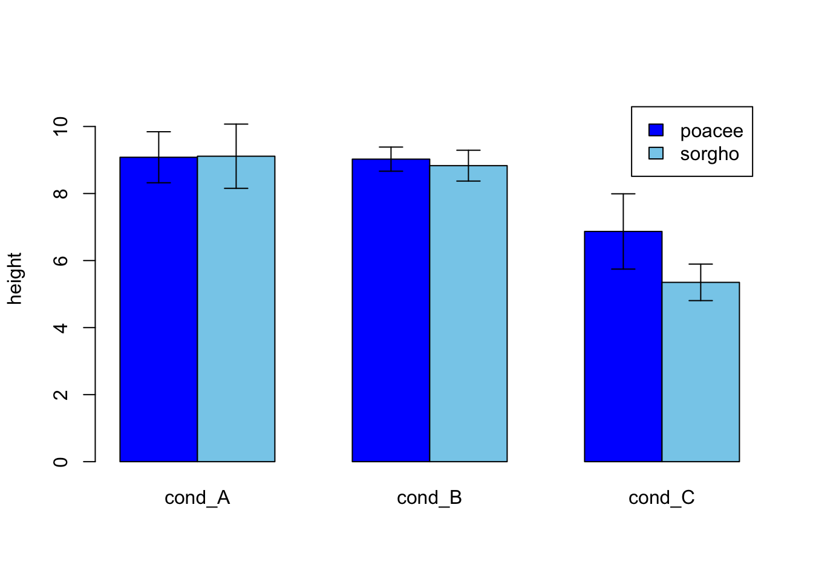

names <-c("Hantavirus", "Tularemia", "Dengue", "Ebola", "E. coli", "Tuberculosis", "Salmonella", "Vaccinia", "Brucella" )# Name is an ordered factor. We do this to ensure the bars are sorted.data <-data.frame(count =c(6, 7, 7, 9, 11, 15, 17, 18, 54), name =factor(names, levels = names),y =seq(length(names)) *0.9)# The colorsBLUE <-"#076fa2"RED <-"#E3120B"BLACK <-"#202020"GREY <-"grey50"plt <-ggplot(data) +geom_col(aes(count, name), fill = BLUE, width =0.6) plt
Chart 4 - Column Charts
# Load ggplot2library(ggplot2)library(dplyr)# Datadata <- iris %>%select(Species, Sepal.Length) # Calculates mean, sd, se and ICmy_sum <- data %>%group_by(Species) %>%summarise( n=n(),mean=mean(Sepal.Length),sd=sd(Sepal.Length) ) %>%mutate( se=sd/sqrt(n)) %>%mutate( ic=se *qt((1-0.05)/2+ .5, n-1))# Standard deviationggplot(my_sum) +geom_bar( aes(x=Species, y=mean), stat="identity", fill="forestgreen", alpha=0.5) +geom_errorbar( aes(x=Species, ymin=mean-sd, ymax=mean+sd), width=0.4, colour="orange", alpha=0.9, size=1.5) +ggtitle("using standard deviation")
# Standard Errorggplot(my_sum) +geom_bar( aes(x=Species, y=mean), stat="identity", fill="forestgreen", alpha=0.5) +geom_errorbar( aes(x=Species, ymin=mean-se, ymax=mean+se), width=0.4, colour="orange", alpha=0.9, size=1.5) +ggtitle("using standard error")
#Let's build a dataset : height of 10 sorgho and poacee sample in 3 environmental conditions (A, B, C)data <-data.frame(specie=c(rep("sorgho" , 10) , rep("poacee" , 10) ),cond_A=rnorm(20,10,4),cond_B=rnorm(20,8,3),cond_C=rnorm(20,5,4))#Let's calculate the average value for each condition and each specie with the *aggregate* functionbilan <-aggregate(cbind(cond_A,cond_B,cond_C)~specie , data=data , mean)rownames(bilan) <- bilan[,1]bilan <-as.matrix(bilan[,-1])#Plot boundarieslim <-1.2*max(bilan)#A function to add arrows on the charterror.bar <-function(x, y, upper, lower=upper, length=0.1,...){arrows(x,y+upper, x, y-lower, angle=90, code=3, length=length, ...)}#Then I calculate the standard deviation for each specie and condition :stdev <-aggregate(cbind(cond_A,cond_B,cond_C)~specie , data=data , sd)rownames(stdev) <- stdev[,1]stdev <-as.matrix(stdev[,-1]) *1.96/10#I am ready to add the error bar on the plot using my "error bar" function !ze_barplot <-barplot(bilan , beside=T , legend.text=T,col=c("blue" , "skyblue") , ylim=c(0,lim) , ylab="height")error.bar(ze_barplot,bilan, stdev)

Chart 5 - Circular Area Charts
# Librarylibrary(fmsb)# Create data: note in High school for Jonathan:data <-as.data.frame(matrix( sample( 2:20 , 10 , replace=T) , ncol=10))colnames(data) <-c("math" , "english" , "biology" , "music" , "R-coding", "data-viz" , "french" , "physic", "statistic", "sport" )# To use the fmsb package, I have to add 2 lines to the dataframe: the max and min of each topic to show on the plot!data <-rbind(rep(20,10) , rep(0,10) , data)# Check your data, it has to look like this!# head(data)# Custom the radarChart !radarchart( data , axistype=1 , #custom polygonpcol=rgb(0.2,0.5,0.5,0.9) , pfcol=rgb(0.2,0.5,0.5,0.5) , plwd=4 , #custom the gridcglcol="grey", cglty=1, axislabcol="grey", caxislabels=seq(0,20,5), cglwd=0.8,#custom labelsvlcex=0.8 )